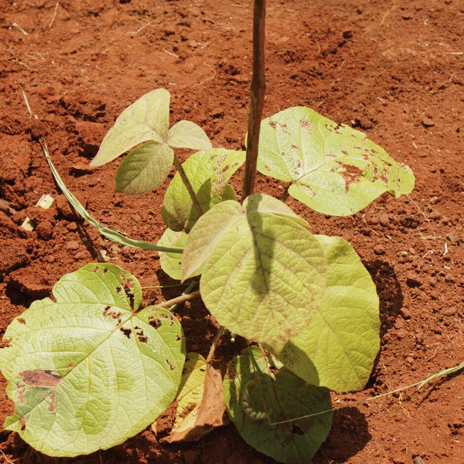

Reflorestamento & plantio compensatório
Recomposição florestal nativa, manutenção, cercamento de áreas e controle de pragas para cumprimento de compensações ambientais.
Solicitar orçamento deste serviçoDescrição técnica e aplicações
Execução de plantios compensatórios e recomposição florestal com espécies nativas, incluindo preparo de solo, plantio, irrigação, manutenção e monitoramento até a entrega ao órgão ambiental.
- Compensação ambiental e florestal
- Recomposição de APP e Reserva Legal
- PRAD em áreas mineradas
- Corredores ecológicos
Recomposição florestal nativa
Seleção de espécies por grupo ecológico.
Manutenção e monitoramento
Coroamento, adubação, replantio e relatórios.
Cercamento e controle de pragas
Proteção das áreas e combate a formigas cortadeiras.
Soluções e técnicas utilizadas
| Solução técnica | Foco de aplicação | Diferencial GHB |
|---|---|---|
| Plantio de nativas | APP, RL e compensação | Alta taxa de sobrevivência |
| Manutenção | Pós-plantio (até 36 meses) | Relatórios técnicos periódicos |
| Cercamento | Isolamento de áreas | Proteção contra gado e fogo |
Benefícios técnicos
✓
Cumprimento de condicionantes e TCCAs
✓
Altos índices de sobrevivência
✓
Relatórios para órgãos ambientais
✓
Ganho de biodiversidade e ESG
Obras relacionadas
Vamos dimensionar a solução para o seu edital?
Envie o termo de referência e receba uma proposta técnica qualificada.
Solicitar proposta técnica